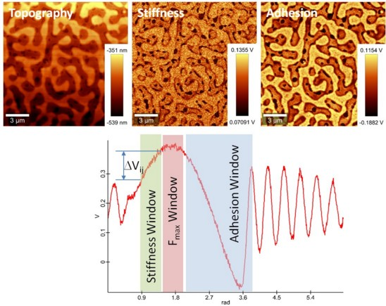
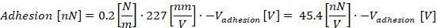
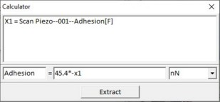
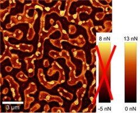
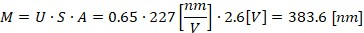
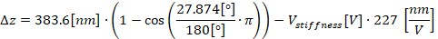
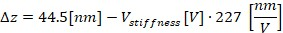
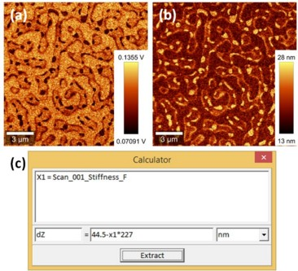
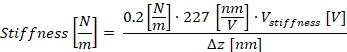
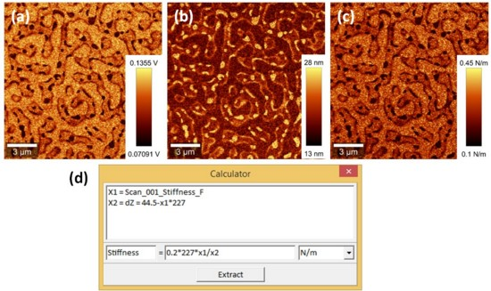

|
DPFM图像
|
在接下来的两个部分中，基于一个示例DPFM测量描述数据评估。这里使用的样品是由PS（聚苯乙烯）、SBR（丁苯橡胶）和EHA（丙烯酸乙基己酯）组成的聚合物共混物。在本节中，仅对获取的图像进行评估。 第二部分 将重点介绍基于获取的脉冲力曲线的评估。
图1显示了使用表1中列出的参数测量的形貌、粘附力和刚度图像。该数据集中的典型脉冲力曲线显示了刚度、Fmax和粘附力的窗口选择。

图1： 聚合物共混物上DPFM测量的结果
备注：
表1：示例测量的参数（重要信息以绿色和红色突出显示）
|
图像扫描： |
|
|
每行点数： |
256 |
|
每图像行数： |
256 |
|
扫描宽度 [µm]： |
16.000 |
|
扫描高度 [µm]： |
16.000 |
|
扫描速度 [s/行]： |
1.000 |
|
回程速度 [s/行]： |
1.000 |
|
PI控制器： |
|
|
设点值 [V]： |
0.40000001 |
|
P增益 [%]： |
6 |
|
I增益 [%]： |
8 |
|
控制通道： |
Fmax |
|
PFM控制： |
|
|
驱动幅度 [Vpp]： |
2.5999997 |
|
驱动频率 [Hz]： |
1000 |
|
采样率 [Hz]： |
999998.31 |
|
激励相位 [°]： |
0 |
|
Fmax窗口 [°]： |
（起始 = 87.114723, 宽度 = 33.543232） |
|
Fmax窗口 [µs]： |
（起始 = 241.99, 宽度 = 93.176） |
|
粘附力窗口 [°]： |
（起始 = 139.38011, 宽度 = 143.92336） |
|
粘附力窗口 [µs]： |
（起始 = 387.17, 宽度 = 399.79） |
|
刚度窗口 [°]： |
（起始 = 56.406136, 宽度 = 27.873955） |
|
刚度窗口 [µs]： |
（起始 = 156.68, 宽度 = 77.428） |
为了计算粘附力，需要将粘附力图像 V粘附力 转换为力的单位。电压在测量的粘附力图像中表示为颜色标尺，其中暗色区域对应于比亮色区域更高的粘附力。
从图像中确定电压时，确保未对图像应用平均或背景扣除。
使用 公式（1），在此特定情况下， k = 0.2 N/m且 S = 227 nm/V，可以使用 计算器工具 中的关系（10）计算每个图像像素处测量的粘附力值（图2）。

(10)
图2：应用了公式（10）的计算器工具

图3：转换力单位后的粘附力图像（亮色显示高粘附力）
计算结果的取值范围从负值到正值，这在物理上没有意义。这些负值来自图1所示脉冲力曲线的偏移。在DPFM测量中只能确定相对粘附力，作为颜色标尺，可以导出 均衡颜色标尺，如图3所示。粘附力图像的颜色标尺现在已转换为正确的力单位。
局部刚度由 公式（5）和（6） 定义，其中忽略了力的性质，这些力对刚度测量有贡献。从这些计算中得到的局部刚度值可用于例如探针-样品界面的建模。
图1中记录的刚度图像显示了PS和EHA之间的对比度。同样，暗色对应于比亮色更低的刚度值。为了计算这两个区域的刚度，需要计算穿透深度 Δz，这也意味着需要计算悬臂梁调制 M。
调制 M 使用 公式（3） 计算。此示例的参数总结在 表2（初步测量） 中。施加到悬臂梁的电压 A 在表1中以绿色标记。

(12)有了收集到的数据（来自公式（12）的调制 M，来自 表2（初步测量） 的灵敏度 S， σ 是表1中的红色值），现在可以使用 公式（4） 计算悬臂梁的穿透深度 Δz：


(13)计算器中的参数X1（图4（c））是初始测量的刚度图像（图4（a））。结果图像如图4（b）所示。

图4：测量的刚度图像（a），使用公式（19）和计算器工具（c）评估的穿透深度（b）
刚度图像通过使用 公式（6） 获得，并采用此示例测量的适当参数：

(14)公式14可直接与 计算器工具 结合使用，如图5（d）所示。

图5：测量的刚度图像（a），穿透深度（b），使用公式（14）和计算器工具（d）评估的刚度图像
在具有高形貌特征的样品上，粘附力和刚度测量的高贡献来自探针和样品之间接触面积的变化。粘附力测量对与悬臂梁相互作用的毛细管力也很敏感。这些力来自空气环境中的水污染。为克服毛细管力，建议使用更高的调制幅度。